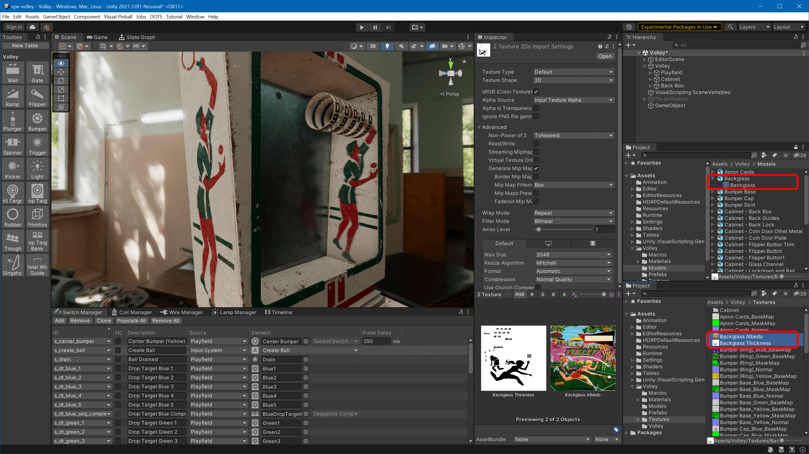
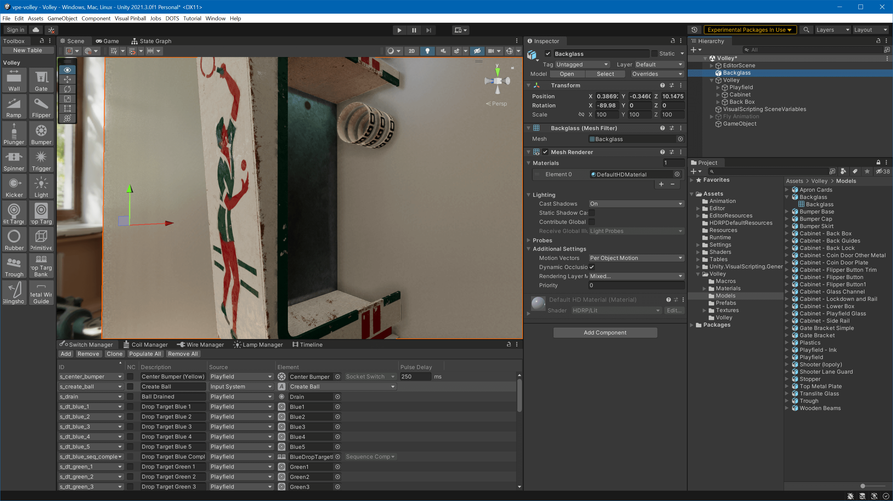
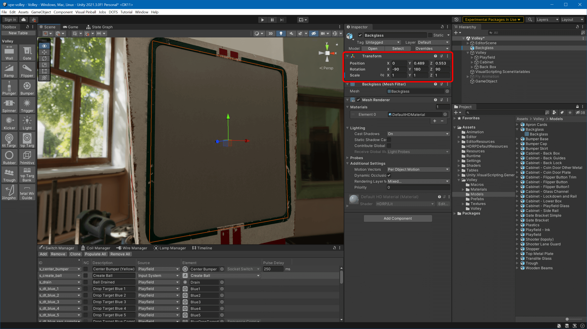
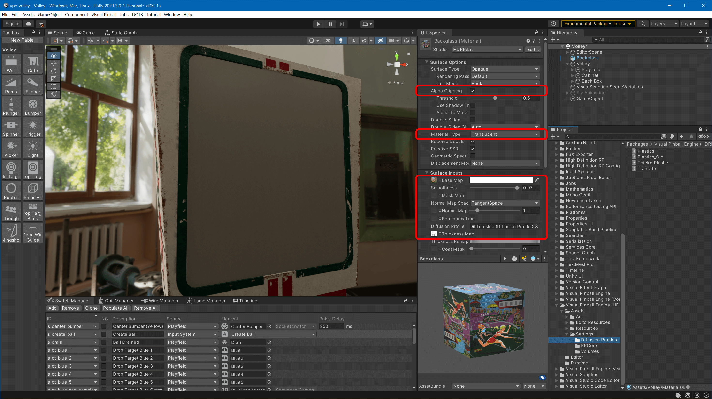
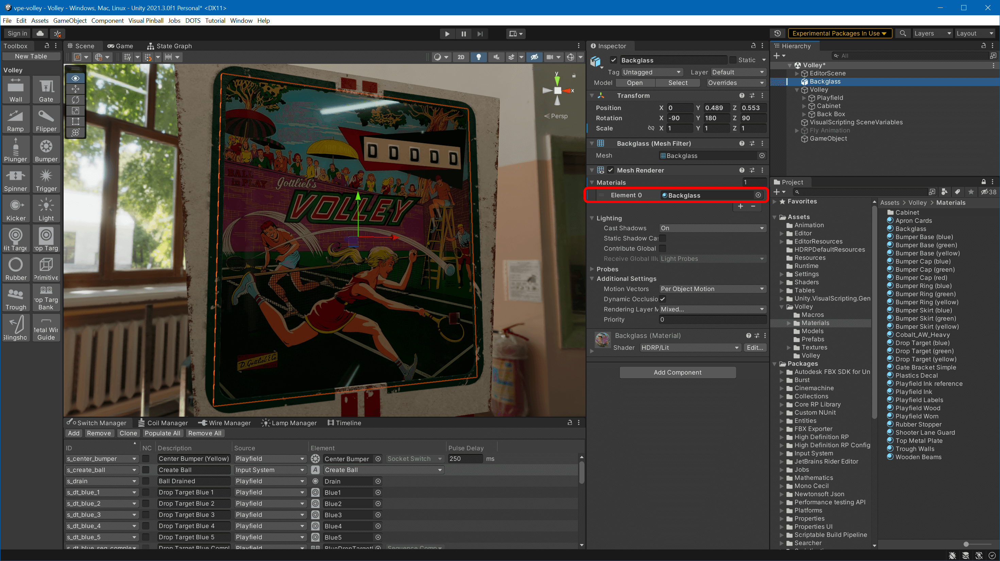

Import Into Unity
Import Your Assets
Open your scene in Unity and copy the Backglass.fbx into your models folder, and Backglass Albedo.png as well as Backglass Thickness.png into the textures folder. You can do that by dragging the files from the file explorer into Unity's Project window.
Note
We recommend storing models at Assets/<Table Name>/Models, textures at Assets/<Table Name>/Textures, and materials at Assets/<Table Name>/Materials.

Add the Backglass to the Scene
In the Project window, select the Backglass prefab (your FBX). In the inspector, uncheck Convert Units and hit Apply.
Drag the backglass it into your scene view.

Ouch, that's too large and not oriented correctly. Let's fix that. In the inspector, set Rotation to -90/180/90 and the scale to 1 on all axes. Then use the Move Tool in the scene view to position it correctly.

Create the Material
In the Project window, navigate to your Materials folder, right click, select Create -> Material, and name the new material Backglass. Set the following properties:
- Enable Alpha Clipping to make the score reels visible through the transparent areas.
- Material Type to Translucent
- Base Map to
Backglass Albedo(use the small target icon to search) - Smoothness to something high like
0.97 - Thickness Map to
Backglass Thickness - For the Diffusion Profile, use the Project window and navigate to
Packages/VisualPinball.Unity.Hdrp/Assets/Settingsand drag and dropTransliteinto the slot (it cannot be searched after because it's part of an external package).

Apply the Material
In the Project window, navigate back to your materials, drag and drop the Backglass material onto the backglass in your 3D view, and...

Voilà!
To test the thickness mask, place a light source behind the backglass and move it around:

Finally, in the Hierarchy window, move the Backglass game object from the root into your table structure. Best practice is to create a Back Box parent where you keep all your game objects that are part of the back box.
Congratulations! You have now made a backglass that will transmit light through the color overlay and block light in any of the masked area.